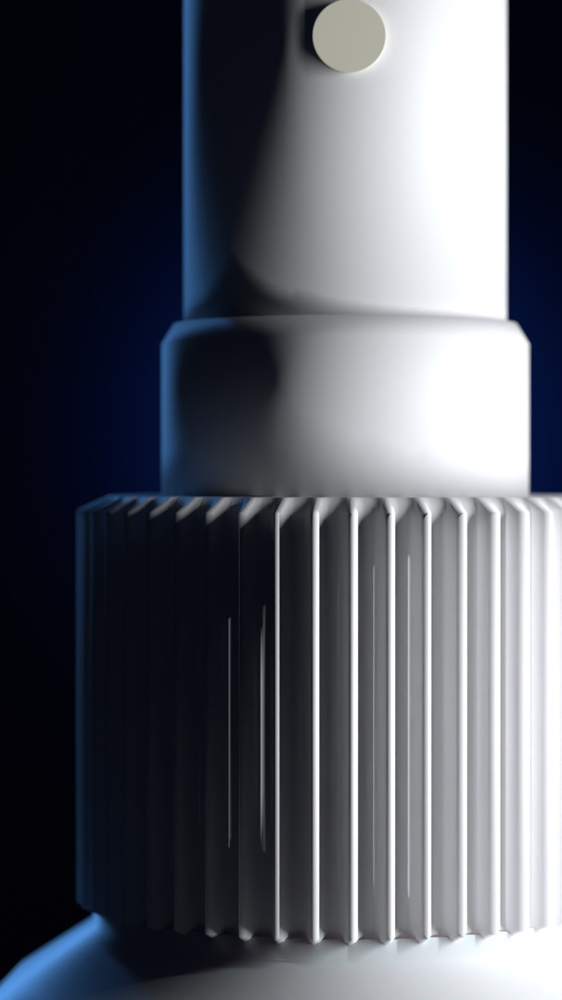
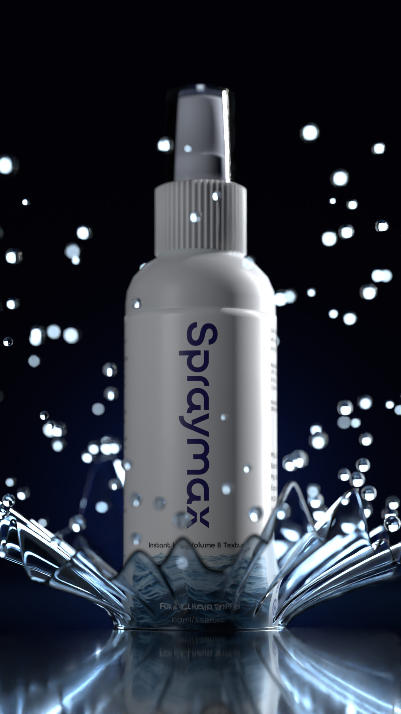
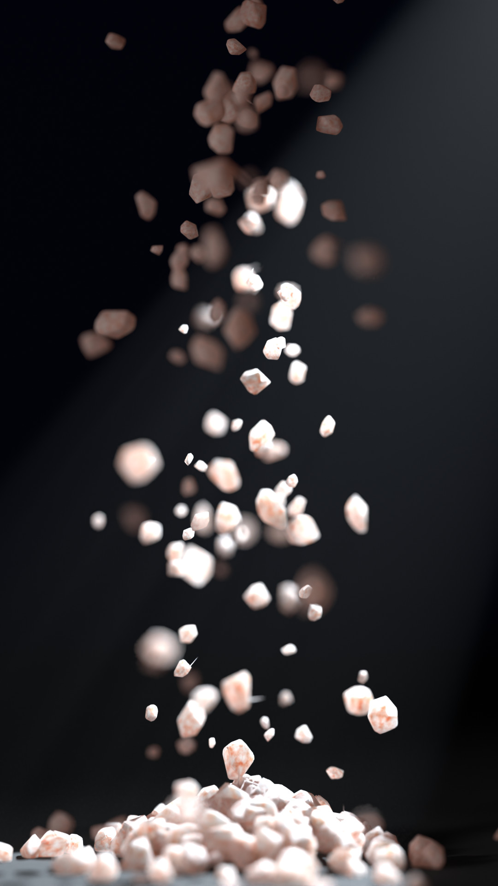
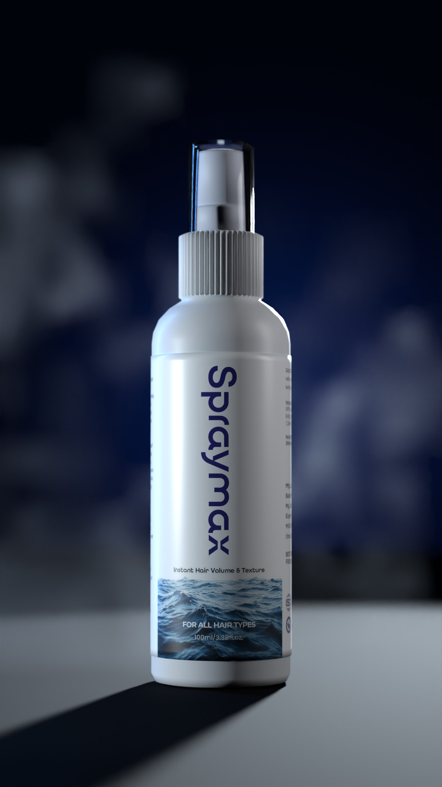
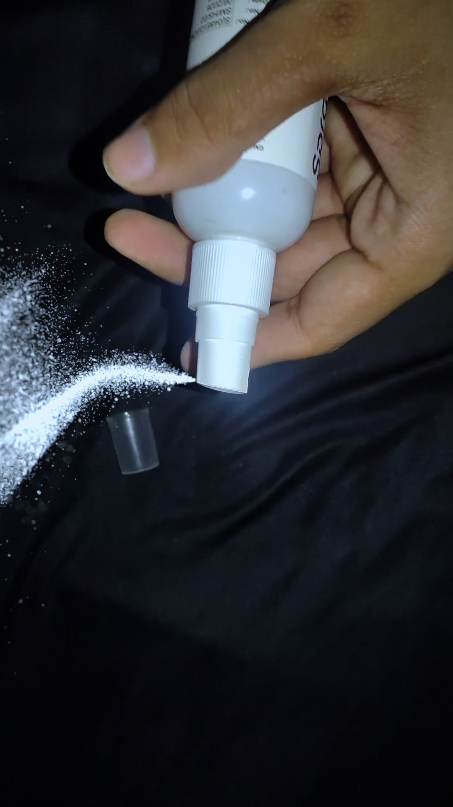
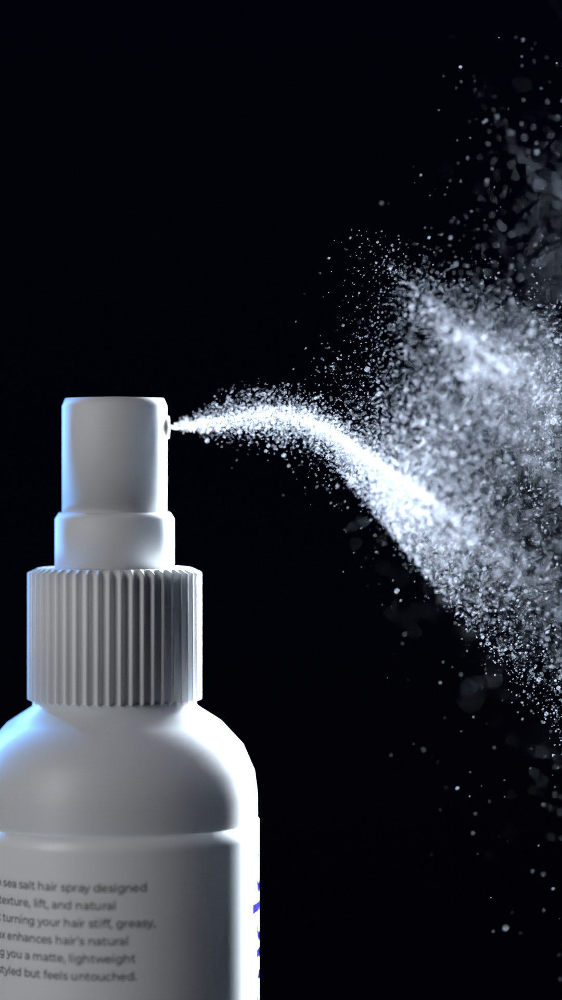
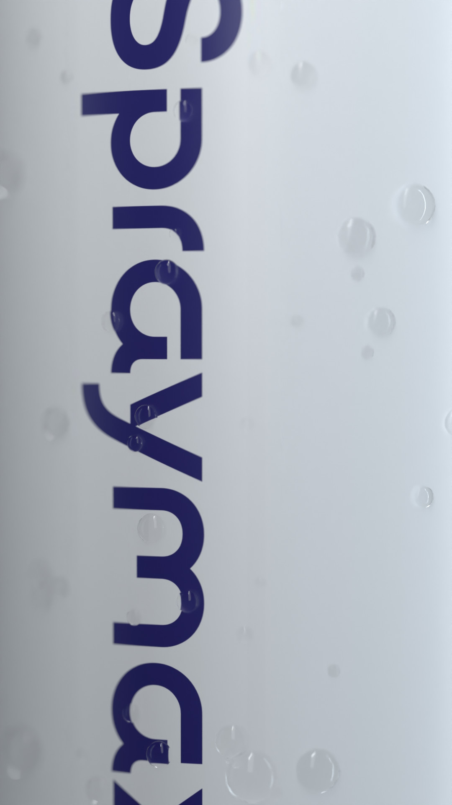
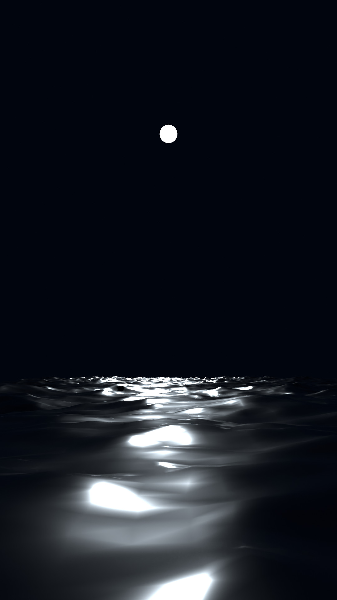
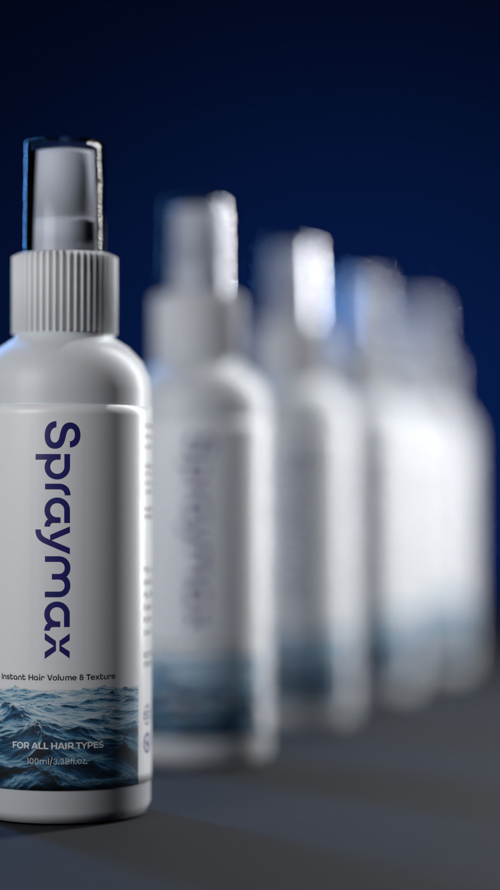
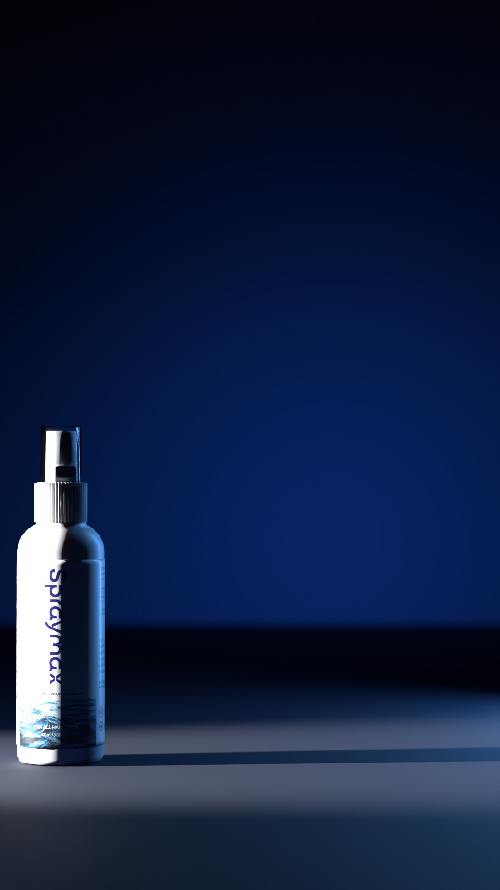

3D previews of each shot, with the real bottle and label. The film itself is made with Seedance 2.5
from your real bottle photos, so it will look like real footage, not 3D.

0:00 The collar

0:01 The splash

0:02 Himalayan salt

0:03 The smoke

0:04 In your hand

0:06 The mist

0:07 Sea-water beads

0:08 The sea

0:09 The lineup

0:10 Packshot
Macro · water splash · salt · smoke · first-person spray
· beads · night sea · five-bottle lineup · packshot. Vertical 9:16, 1080×1920, 12 seconds.
01/100:00–0:01Macro
The collar
A hard white light sweeps across the ribbed collar, one rib at a time.
02/100:01–0:02Elemental
The splash
Dark sea water erupts in a crown round the bottle, droplets flying in slow motion.
03/100:02–0:03Ingredient
Himalayan salt
Pink Himalayan salt tumbles through one cold beam of light.
04/100:03–0:04Elemental
The smoke
Cold smoke rolls in and curls round the bottle as the camera pushes in.
05/100:04–0:06POV · use
In your hand
First person: one press, and a fine mist settles on your open palm.
Preview made from your test video plus a 3D mist; in the film both hands are shown
06/100:06–0:07Macro
The mist
The mist bursts out of the nozzle, backlit ice blue. Mist, never liquid.
07/100:07–0:08Macro
Sea-water beads
Beads of sea water on the label; one runs down over the wordmark.
08/100:08–0:09Elemental
The sea
A night swell rises toward the lens under a cold moon.
09/100:09–0:10Multi-pack
The lineup
Five bottles step back into the dark, rim-lit, the front one sharp.
10/100:10–0:12End card
Packshot
The bottle on deep blue, a long shadow, then the logo and BORN IN HIMACHAL.
To start
Pick A or B.
Recommended
A · 720p, finished at 1080p $3.78
One Seedance 2.5 generation at 720p, upscaled to 1080×1920 in the finish. If a shot misses,
I remake just that shot ($1.26 each). Two fixes still stay under $7.
B · native 1080p $9.48
Sharpest. Over the $7 budget, and one take only: no money left to fix a shot.
Nothing has been spent yet. After your pick I send the
prompt, check every shot against your real bottle, fix what fails, then grade, add sound and the end card.